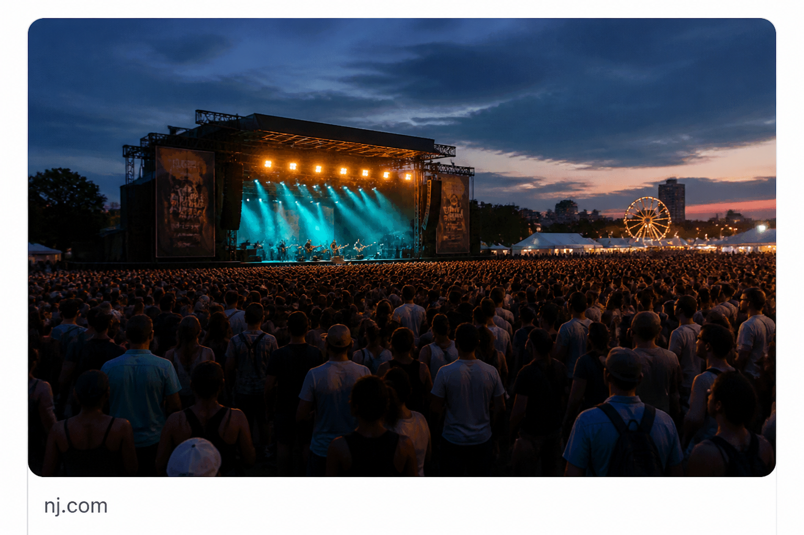

Images
Event / atmosphere photo
Spoken cue: “We were at that Asbury festival last summer…”
Query: Asbury Park music festival stage night
Crop: one Images tile + tiny source line — not the full Images grid.